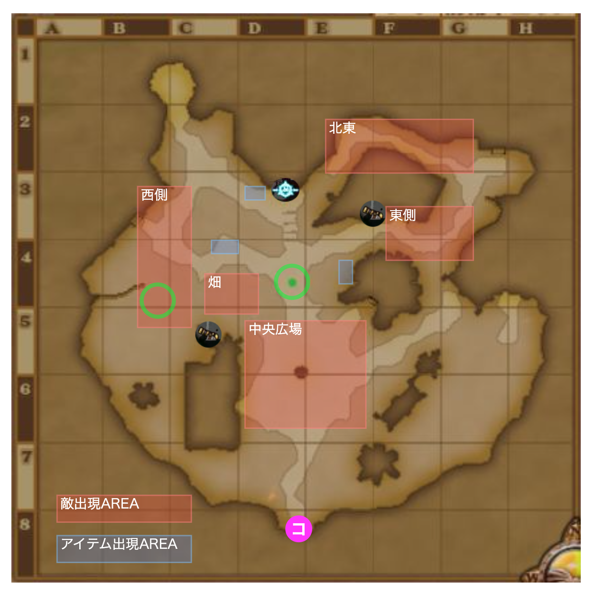

青鮮の菜果兵団
ボス:青鮮の根絶将コンネ
- 植物系
- HP: 120万
必要耐性
- 呪文，風，魅了
- あとは火力もりもり. 戦神のベルト,断罪の指輪,ラストチョーカー,機神の眼甲
適職
- バトマス,魔剣,魔法戦士,レンジャー,賢者,まあいつもの防衛最強職たち.
アイテム湧き場所↓↓
- 中ボスのたまねぎキングがしびれ砲弾を落とす.
- ボスのスイートブラッドで魅了になる.味方に結界壊されたりするので，キラポン，弓ポンできるならあるといい
行動表
| 残り時間 | 場所 | イベント/行動 アイテム係 |
|---|---|---|
| 7:55 開幕 | 広場北東,畑北 |
|
| 7:40 | 広場 |
|
| 7:30 | 広場 |
|
| 7:27 | 広場,西側サークル |
|
| 7:00 | 広場,西の大砲横 |
|
| 6:50 | 結界付近 |
|
| 6:47 | 西側 |
|
| 6:35 | 東側結界前 |
|
| 6:20 | 広場，西，東 |
|
| 6:00 | 東,西 |
|
| 5:30 | 広場 |
|
| 5:07 | 広場，西側 |
|
| 4:50 | 畑北，広場北東 |
|
| 4:30 | 南大ボス |
|
| 4:17 | 西 |
|
| 4:09 | 中央 |
|
| 3:49 | 中央大砲サークル |
|
| 3:37 | 東西 |
|
| 3:10 | 結界前，畑北 |
|
| 3:07 | 西 |
|
| 2:43 | 結果前 |
|
| 2:30 | 東側 |
|
| 2:15頃 | 中央サークル |
|
| 1:30 | 東側，西側， |
|
| 1:09 | 広場サークル |
|
| 0:50 | 東 |
|